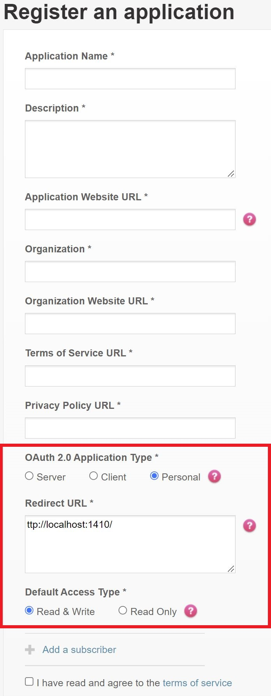
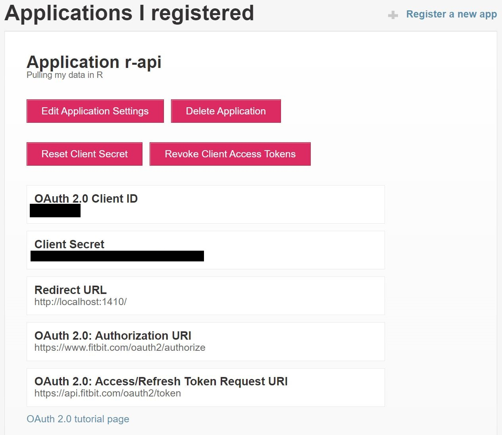

Introduction
In part 1 of this series, I will demonstrate how to interact with the Fitbit API in R.
Huge credit to Matt Kaye for creating the fitbitr package that provides an interface between R and the Fitbit API. If you are familiar with R and you have a Fitbit, you should have success following what I have laid out below.
Install the fitbitr package
From CRAN:
install.packages("fitbitr")Or the development version from github:
devtools::install_github("mrkaye97/fitbitr")Register for a Fitbit API Key
While this information is also provided on the repo’s Github page, I provide similar instructions here for ease of access.
You’ll need to request an API key from the Fitbit developers webpage. At this page, you should find a form similar to this.
Fill out the form as accurately as possible, but I recommend the following 3 inputs I specify in the red box.

If you want to copy and paste the Redirect URL, here you go: http://localhost:1410/
After you agree to Fitbit’s terms, you receive your client ID and API key. I censored mine, but you can see below where yours will be located.

Now, the fun part…
Access Your Fitbit Data
Authenticate Your Session
I’ve saved both my Client ID and Client Secret in my .Revniron file in the root of my repo. I saved them as FITBIT_KEY and FITBIT_SECRET respectively. Access them using the Sys.getenv() function.
To find out more information about how to do this, look here.
You’ll need to generate a token using the function below.
library(tidyverse)
library(fitbitr)
generate_token(
client_id = Sys.getenv("FITBIT_KEY"),
client_secret = Sys.getenv("FITBIT_SECRET"),
callback = "http://localhost:1410/",
cache = TRUE
)When you execute this function, you should get a window that looks like this.

As long as you set the cache argument to TRUE, you will have a token saved in a file named .httr-oauth in the root of your repo. For future authentications, you can simply use the function below. Should you want to create a new token every time, you can leave the cashe argument equal to FALSE.
load_cached_token(path = ".httr-oauth")Download Data
There are several functions for accessing all your data tracked on Fitbit. For the purposes of this post, I’ll highlight a few. I will do deeper analysis in subsequent posts.
Lifetime Performance: Personal Bests
lifetime_bests()## # A tibble: 3 x 3
## metric date value
## <chr> <chr> <dbl>
## 1 distance 2014-03-23 38.7
## 2 floors 2021-03-21 136.
## 3 steps 2014-03-23 47985I’ve had two Fitbits. One I wore for part of 2014 and one I’ve worn since the beginning of 2021.
It appears I ran a marathon on 23 March 2021. (Checks Old Facebook Photos) Yep, The Bataan Death March in White Sands Missile Range, NM. And I apparently went on quite a hilly hike with my wife and kids in March of 2021. March is clearly an active month for me….
Lifetime Performance: Totals
lifetime_totals()## # A tibble: 1 x 3
## distance floors steps
## <dbl> <int> <int>
## 1 4472. 12627 623306712K floors. Makes me feel tired just thinking about it. :)
Daily Performance: Elevation, Distance, Steps, Floors
To save some space, I display the following four daily performance outputs in one dataframe.
start_date <- lubridate::ymd("20220501")
end_date <- lubridate::ymd("20220507")
elevation <- elevation(start_date = start_date, end_date = end_date)
distance <- distance(start_date = start_date, end_date = end_date)
steps <- steps(start_date = start_date, end_date = end_date)
floors <- floors(start_date = start_date, end_date = end_date)
reduce(.x = list(distance, steps, floors), .f = left_join, by = "date", .init = elevation)## # A tibble: 7 x 5
## date elevation distance steps floors
## <date> <dbl> <dbl> <dbl> <dbl>
## 1 2022-05-01 27 3.77 5506 9
## 2 2022-05-02 121 14.4 18182 40
## 3 2022-05-03 131 10.0 11761 43
## 4 2022-05-04 42 10.3 15103 14
## 5 2022-05-05 121 11.2 13537 40
## 6 2022-05-06 124 11.3 16501 41
## 7 2022-05-07 51 8.60 12578 17Special Note About Request Dates
Thought the fitbitr library will not stop you, the Fitbit API will only allow you to request up to 100 days of data at at time. You can read more about it in the documentation.
Sleep Details
There are three different functions for displaying sleep data. I display one for simplicity.
# sleep_stage_granular(start_date = start_date,end_date = end_date) ## not shown
# sleep_summary(start_date = start_date, end_date = end_date) ## not shown
sleep_stage_summary(start_date = start_date, end_date = end_date)## # A tibble: 28 x 5
## date stage count minutes thirty_day_avg_minutes
## <chr> <chr> <int> <int> <int>
## 1 2022-05-07 deep 4 68 70
## 2 2022-05-07 light 27 282 276
## 3 2022-05-07 rem 16 125 79
## 4 2022-05-07 wake 29 49 43
## 5 2022-05-06 deep 3 57 73
## 6 2022-05-06 light 30 282 274
## 7 2022-05-06 rem 5 71 80
## 8 2022-05-06 wake 28 44 43
## 9 2022-05-05 deep 6 88 69
## 10 2022-05-05 light 31 223 287
## # ... with 18 more rowsMaybe I should sleep more….
Heart Rate By Minute
heart_rate_intraday(date = start_date, minutes = TRUE) ## FALSE = By Second## # A tibble: 1,316 x 2
## time heart_rate
## <dttm> <int>
## 1 2022-05-01 00:00:00 83
## 2 2022-05-01 00:01:00 79
## 3 2022-05-01 00:02:00 84
## 4 2022-05-01 00:03:00 79
## 5 2022-05-01 00:04:00 70
## 6 2022-05-01 00:05:00 72
## 7 2022-05-01 00:06:00 75
## 8 2022-05-01 00:07:00 77
## 9 2022-05-01 00:08:00 69
## 10 2022-05-01 00:09:00 74
## # ... with 1,306 more rowsHeart Rate Zones
heart_rate_zones(start_date = start_date, end_date = end_date)## # A tibble: 28 x 6
## date zone min_hr max_hr minutes_in_zone calories_out
## <date> <chr> <int> <int> <int> <dbl>
## 1 2022-05-01 Out of Range 30 109 1438 2119.
## 2 2022-05-01 Fat Burn 109 133 2 12.2
## 3 2022-05-01 Cardio 133 164 0 0
## 4 2022-05-01 Peak 164 220 0 0
## 5 2022-05-02 Out of Range 30 108 1375 2699.
## 6 2022-05-02 Fat Burn 108 133 35 215.
## 7 2022-05-02 Cardio 133 164 13 152.
## 8 2022-05-02 Peak 164 220 17 209.
## 9 2022-05-03 Out of Range 30 108 1382 2302.
## 10 2022-05-03 Fat Burn 108 133 32 184.
## # ... with 18 more rowsActivity
active_fairly <- minutes_fairly_active(start_date = start_date,end_date = end_date)
active_lighty <- minutes_lightly_active(start_date = start_date,end_date = end_date)
active_sedentary <- minutes_sedentary(start_date = start_date,end_date = end_date)
reduce(.x = list(active_lighty, active_sedentary), .f = left_join, by = "date", .init = active_fairly)## # A tibble: 7 x 4
## date minutes_fairly_active minutes_lightly_active minutes_sedentary
## <date> <dbl> <dbl> <dbl>
## 1 2022-05-01 0 236 645
## 2 2022-05-02 27 350 515
## 3 2022-05-03 31 232 722
## 4 2022-05-04 21 470 498
## 5 2022-05-05 15 312 606
## 6 2022-05-06 23 453 482
## 7 2022-05-07 12 289 539In future posts, I’ll do some visualizations and statistical analysis of this data!